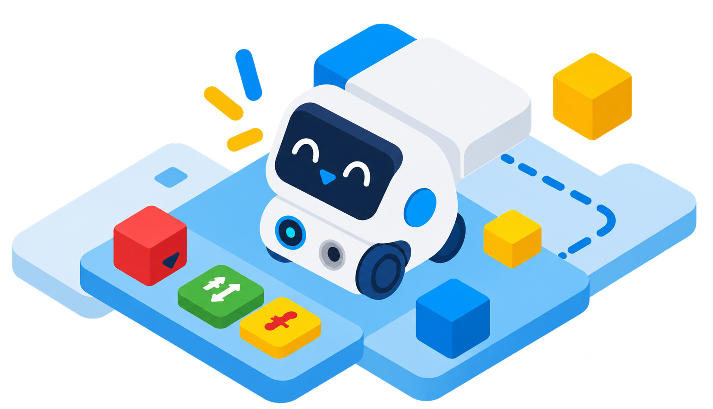
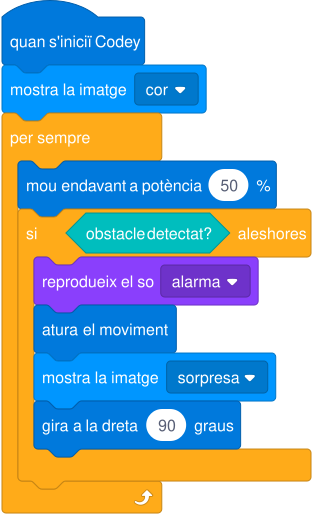
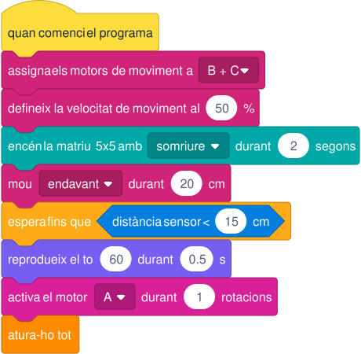

Programes de blocs
Pàgina de prova de renderitzat de programes visuals de blocs per a Micro:bit, Codey Rocky i LEGO SPIKE Prime.

Arquitectura unificada de renderitzat al servidor
Aquesta prova valida la renderització unificada dels blocs de programació per als 3 robots: MakeCode (Micro:bit), mBlock 5 (Codey Rocky) i SPIKE App (LEGO SPIKE Prime), tots generats al servidor com a fitxers SVG purs i amb un sistema de memòria cau basat en fitxers (_cache/makecode/), amb 0ms de cost al navegador.
Micro:bit
👤 9-18 anys • Paleta oficial: #047fdf + #4a515d

basic.forever(function () {
basic.showIcon(IconNames.Heart)
basic.pause(500)
basic.clearScreen()
basic.pause(500)
})
input.onButtonPressed(Button.A, function () {
basic.showString("Hola!")
basic.showIcon(IconNames.Happy)
})_cache/makecode/). Si el fragment de codi ja ha estat processat, es llegeix directament del disc en 0ms sense fer cap crida a la xarxa ni carregar iframes pesats al navegador del client.
Codey Rocky
👤 6-12 anys • Paleta oficial: #0079dc + #fdc80a

quan s'iniciï Codey :: hat #0079dc
mostra la imatge [cor v] :: #0096ff
per sempre :: cstart #ffab19
mou endavant a potència (50) % :: #0079dc
si <obstacle detectat? :: #00bebe> aleshores :: cstart #ffab19
reprodueix el so [alarma v] :: #8a3ffc
atura el moviment :: #0079dc
mostra la imatge [sorpresa v] :: #0096ff
gira a la dreta (90) graus :: #0079dc
fi :: cend
fi :: cend_scripts/lib/blocks.js. Assigna els colors corporatius de mBlock 5 (xassís/moviment #0079dc, pantalla LED #0096ff, sensor d'infrarojos #00bebe i altaveu #8a3ffc). El client rep directament el fitxer vectorial sense necessitar biblioteques pesades.
LEGO SPIKE Prime
👤 10-16 anys • Paleta oficial: #d82098 + #fddc3e

quan comenci el programa :: hat #fddc3e
assigna els motors de moviment a [B + C v] :: #cf2478
defineix la velocitat de moviment al (50) % :: #cf2478
encén la matriu 5x5 amb [somriure v] durant (2) segons :: #00a8a8
mou [endavant v] durant (20) cm :: #cf2478
espera fins que <distància sensor < (15) cm :: #047fdf>
reprodueix el to (60) durant (0.5) s :: #785ef0
activa el motor [A v] durant (1) rotacions :: #d82098
atura-ho tot :: cap #ff8c00_scripts/lib/blocks.js amb les paletes oficials de l'app SPIKE Prime (motors individuals #d82098, parella de moviment #cf2478, matriu 5x5 #00a8a8, sensor ultrasònic de distància #047fdf i esdeveniments en groc #fddc3e).
Resum pedagògic i tècnic de la solució
Aquesta arquitectura permet que el professorat visualitzi de manera fidel exactament els mateixos blocs que trobarà a les aplicacions oficials de cada robot:
- Micro:bit: Es beneficia tant del pre-renderitzat local immediat com del motor oficial de Microsoft per als blocs MakeCode, sense mantenir gràfics manuals.
- Codey Rocky i SPIKE Prime: Els blocs pre-renderitzats en SVG garanteixen que les guies didàctiques carreguin instantàniament, siguin imprimibles en alta resolució i funcionin fins i tot en aules sense connexió a internet.